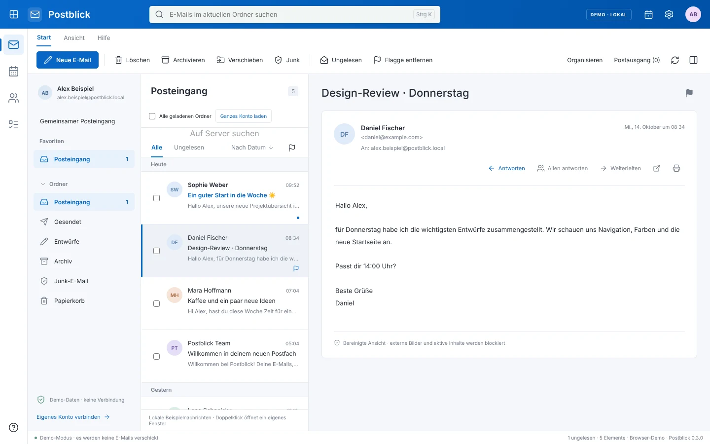
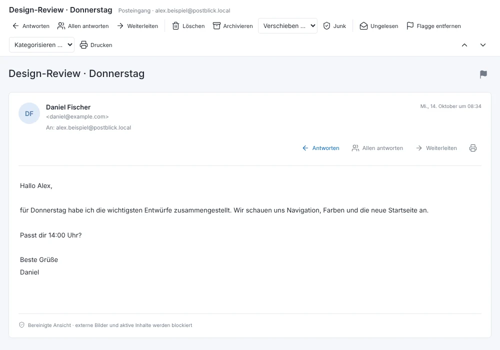
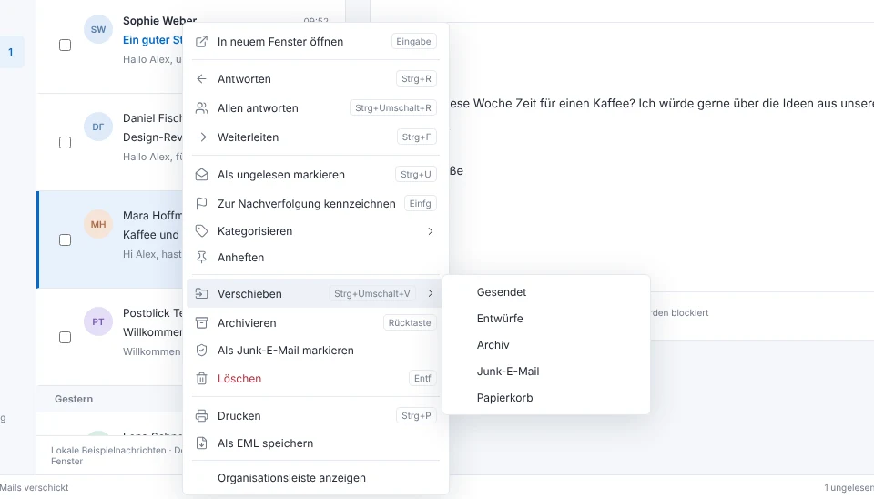
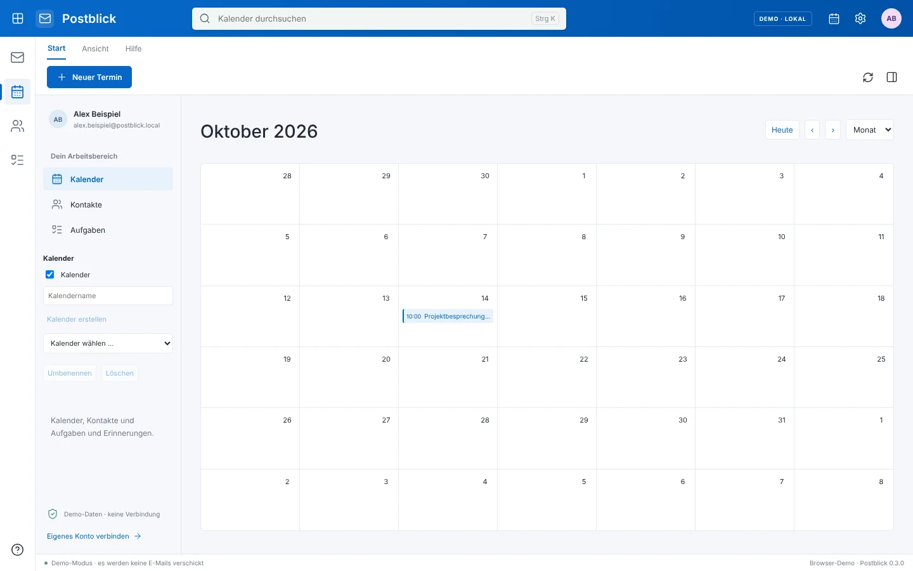

Postblick ist ein kostenloser E-Mail-Client für Windows, der sich bedient wie Outlook: Doppelklick öffnet ein eigenes Fenster, Strg+R antwortet, der Rechtsklick hat die Befehle, die du suchst. Deine Konten, Passwörter und Nachrichten liegen verschlüsselt auf deinem PC – ohne Postblick-Konto und ohne Server dazwischen.
Eine frühe, nicht digital signierte Version: Beim ersten Start zeigt Windows vermutlich eine SmartScreen-Warnung. Was das bedeutet, steht in Kapitel 4.

TastaturschabloneAnklicken und Tasten drücken
Abb. 1 Posteingang im Demo-Modus, alle Namen und Nachrichten sind Beispieldaten. So startet Postblick, bevor du ein Konto verbindest.
Postblick übernimmt die Gesten, die Outlook-Nutzer seit Jahren in den Fingern haben. Was du mit Maus und Tastatur gewohnt bist, funktioniert hier genauso – bis hin zum Menüband mit den Reitern „Start“ und „Ansicht“.
Eigene Fenster
Ein Doppelklick öffnet die Nachricht in einem eigenen Lesefenster mit Menüband. Antworten und Weiterleiten bekommen ein eigenes Schreibfenster, Entwürfe öffnen sich direkt zum Bearbeiten. Mit Strg+, und Strg+. blätterst du zur vorherigen oder nächsten Nachricht, Esc schließt das Fenster.

Abb. 2 Lesefenster nach einem Doppelklick. Beispieldaten aus dem Demo-Modus.
Rechtsklick
Auf Nachrichten findest du Antworten, Gelesen und Ungelesen, Kennzeichnen, Kategorisieren, Anheften, Verschieben, Archivieren, Junk und Drucken – jeweils mit dem Tastenkürzel daneben. Auf Ordnern: alle als gelesen markieren, Unterordner anlegen, umbenennen, zu den Favoriten nehmen oder den Ordner leeren.

Abb. 3 Kontextmenü mit aufgeklapptem „Verschieben“. Beispieldaten aus dem Demo-Modus.
Auswahl
Strg- und Umschalt-Klick wählen mehrere Nachrichten aus, Strg+A alle in der Liste. Die Auswahl ziehst du auf einen beliebigen Ordner, löschst, archivierst oder markierst sie in einem Zug.
Ansicht
Lesebereich rechts, unten oder ausgeblendet. Unterhaltungen, Gruppen wie „Heute“, „Gestern“ und „Letzte Woche“, Sortierung nach Datum, Absender, Betreff, Wichtigkeit oder Kennzeichnung. Dazu eine Kompaktansicht und ein dunkles Design.
Postblick verbindet sich direkt mit deinem E-Mail-Anbieter. Es gibt kein Postblick-Konto, keine Postblick-Cloud und keinen Server, über den deine Nachrichten laufen.
Dein AnbieterOutlook.com, Microsoft 365, Gmail, GMX, WEB.DE, Yahoo, iCloud oder jeder IMAP-Server
TLS
Dein Windows-PCPostblick hält Zugangsdaten und Nachrichten-Cache verschlüsselt mit Windows DPAPI
Postblick-ServerGibt es nicht.
Abb. 4 Der Weg einer Nachricht: vom Anbieter verschlüsselt auf deinen PC. Eine dritte Station existiert nicht.
Anmeldung
Microsoft-Konten melden sich im Systembrowser an, mit OAuth und PKCE. Dein Microsoft-Passwort bekommt Postblick nie zu sehen; gespeichert wird nur ein verschlüsseltes Anmelde-Token.
Verbindung
IMAP läuft über TLS auf Port 993, SMTP über 465 oder 587 mit verpflichtendem STARTTLS. Serverzertifikate werden geprüft – es gibt keinen Rückfall auf Klartext und keinen Schalter, der die Prüfung abschaltet.
Lesen
HTML-Mails werden bereinigt angezeigt: Externe Bilder, Skripte und aktive Inhalte sind blockiert, Zählpixel laden also nicht. Links öffnen erst, nachdem du das Ziel bestätigt hast.
Trennen
Trennst du ein Konto, entfernt Postblick dessen lokalen Cache und die gespeicherten Zugangsdaten. Die Nachrichten auf dem Server bleiben erhalten.
Grenze
Die Verschlüsselung schützt deine Daten auf der Festplatte. Gegen Schadsoftware, die unter deinem eigenen Windows-Benutzer läuft, hilft sie nicht.
Ein Register des Funktionsumfangs von Version 0.3.0, nach Bereichen. Die vollständige Gegenüberstellung mit Outlook, einschließlich allem, was noch fehlt, steht im Funktionsstand.
Konten
Mehrere Konten gleichzeitig, verschlüsselt getrennt
Gemeinsamer Posteingang
Microsoft 365 und Outlook.com
Gmail, GMX, WEB.DE, Yahoo, iCloud mit Servervorgaben
Jedes IMAP/SMTP-Konto
Abruf im Hintergrund, Windows-Benachrichtigungen, Zähler in der Taskleiste
E-Mail
Ordner, Unterordner, Favoriten
Kategorien und Anheften
Lokale Regeln nach Absender und Betreff
Suche mit from:, subject:, after:, has:attachment
Suche auf dem Server
Unterhaltungen im Lesebereich
Schreiben
Formatierter Text, Signatur, Vorlagen
Cc, Bcc, Priorität, Lesebestätigung
Geplanter Versand über den Postausgang
Automatische lokale Entwurfssicherung
Anhänge bis 20 MB
Kalender
Tag, Woche, Monat
Mehrere Kalender, ein- und ausblendbar
Serientermine und Erinnerungen
Teams-Besprechungen und Zusagen bei Microsoft-Konten
Kontakte und Aufgaben
Kontakte mit Gruppen, Gruppe anschreiben
Aufgaben mit Unteraufgaben, Erinnerung und Wiederholung
Microsoft To Do
„Mein Tag“ mit Terminen und Aufgaben
Daten
EML-, CSV- und ICS-Export und -Import
Drucken
Als Standard-Mailprogramm für mailto:-Links
Abwesenheitsnotiz bei Microsoft-Konten

Abb. 5 Kalender in der Monatsansicht. Beispieldaten aus dem Demo-Modus.
Unter den Release-Assets liegt die vollständige EXE mit 113 MiB. „Source code (zip)“ ist kein Installer, und eine EXE mit nur wenigen Kilobyte ist ein Git-LFS-Verweis – den bitte löschen und neu laden.
Prüfen in PowerShell: Get-FileHash .\Postblick-0.3.0-Windows-x64-Setup.exe
SmartScreen bestätigen
Der Installer ist nicht digital signiert. Windows warnt deshalb womöglich mit „Der Computer wurde durch Windows geschützt“. Stimmt die Prüfsumme, wählst du „Weitere Informationen“ und „Trotzdem ausführen“. Schalte SmartScreen deshalb bitte nicht generell ab.
Demo ansehen
Postblick installiert sich für deinen Benutzer, du wählst den Ort. Die App startet mit klar gekennzeichneten Beispieldaten; im Demo-Modus wird keine E-Mail verschickt.
Konto verbinden
Unter Einstellungen → Konto. Für IMAP/SMTP reichen Adresse, Server und meist ein App-Passwort; bei Gmail, GMX, WEB.DE, Yahoo und iCloud sind die Server vorausgefüllt. Für Microsoft 365 und Outlook.com brauchst du in dieser Version noch eine eigene, kostenlose App-Registrierung mit Client-ID – die Anleitung steht in der README.
Voraussetzung Windows 10 oder 11, 64 Bit. Persönliche Daten bleiben bei einer Deinstallation in deinem Benutzerprofil erhalten.
Postblick · BenutzerhandbuchKapitel 5 · Errata5–1
Was du wissen solltest.
Jedes ehrliche Handbuch hat ein Errata-Blatt. Diese Punkte gelten für Version 0.3.0.
Frühe Version
Die Abläufe mit echten Microsoft- und IMAP-Konten sind umgesetzt, aber noch nicht mit Testkonten Ende-zu-Ende geprüft. Probier Postblick zuerst mit einem Testkonto aus.
Nicht signiert
Ohne Code-Signing-Zertifikat warnt Windows beim Installieren, und automatische Updates bleiben abgeschaltet. Neue Versionen lädst du selbst.
Kein Audit
Es gab bisher kein unabhängiges Sicherheitsaudit. Ein mit Outlook vergleichbares Sicherheitsniveau ist nicht nachgewiesen.
Kein vollständiger Ersatz
Es fehlen unter anderem PST- und MSG-Import, S/MIME, freigegebene Exchange-Postfächer, Stellvertretung und Add-ins.
Nur Windows
Windows 10 und 11 mit 64 Bit. Eine macOS-Version ist nicht paketiert.
Kein Microsoft-Produkt
Postblick ist ein unabhängiges Open-Source-Projekt und steht in keiner Verbindung zu Microsoft.
Postblick · BenutzerhandbuchAnhangA–1
Offen und überprüfbar.
Der komplette Quellcode steht unter MIT-Lizenz auf GitHub. Zu jedem Release gehört ein Prüfprotokoll: welche Tests liefen, wie der Installer auf einem Windows-Rechner installiert, gestartet und wieder deinstalliert wurde, und mit welchen Prüfsummen.
Automatische Prüfungen
39 Kern- und Provider-Tests, 17 Browser-Abläufe, 2 Desktop-Tests
Release-Prüfung
Installation, Start, Mailto- und Benachrichtigungs-Registrierung, Deinstallation auf Windows